작업 중 · 이미지와 영상은 실제 결과물이고, 글은 아직 임시 원고입니다.
(2) · Saengmag · Reels Series
월간 문장뽑기
왜 텍스트는 릴스에서 살아남기 어렵다고 생각할까?
릴스는 움직이는 이미지와 소리의 형식이라 글이 설 자리가 없다고들 한다. 〈월간 문장뽑기〉는 그 통념을 시리즈로 시험해 본 정기 릴스다. (임시 도입문)
Situation읽는 콘텐츠는 영상에서 밀려난다
화면이 움직이기 시작하면 글은 자막으로 물러난다. 텍스트 중심의 매체가 릴스로 옮겨 갈 때 가장 먼저 잃는 것은 문장 자체의 힘이다. 이 문단에는 시리즈를 시작하기 전 생맥의 릴스가 어떤 모습이었는지가 들어간다. (임시 원고)
독자는 문장을 좋아했지만, 문장을 보여 주는 방식은 여전히 정지된 이미지에 머물러 있었다. 그 간극을 어떻게 메울지가 출발점이었다.
Solution문장을 주인공으로 세우는 편집
문장이 영상의 장식이 아니라 주인공이 되도록, 화면의 움직임을 줄이고 읽는 속도에 맞춰 컷을 나누는 방식을 생각했다. 이 문단에는 한 편이 만들어지는 순서가 들어간다. (임시 원고)
- 25년 10월 · 〈10월의 문장 뽑기〉
- 25년 12월 · 〈12월 행운의 문장 뽑기〉
- 26년 7월
- 26년 10월
문장을 고르는 기준, 화면에 남길 글자 수, 음악과 컷의 길이처럼 반복되는 시리즈에서 지켜 온 규칙을 적는 문단이다. 정기 시리즈인 만큼 매회 바뀌는 것과 바뀌지 않는 것을 나누어 쓴다.
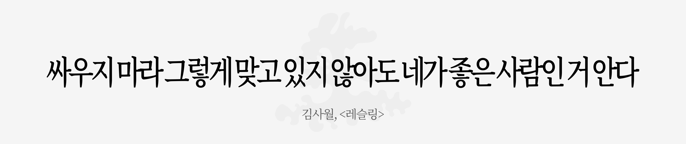
26년 5월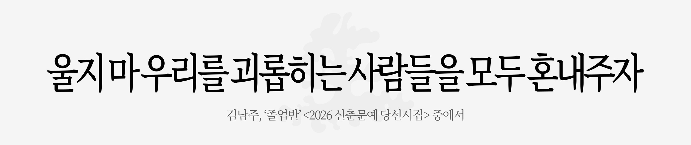
26년 5월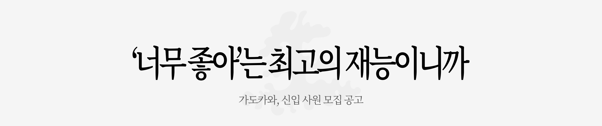
26년 5월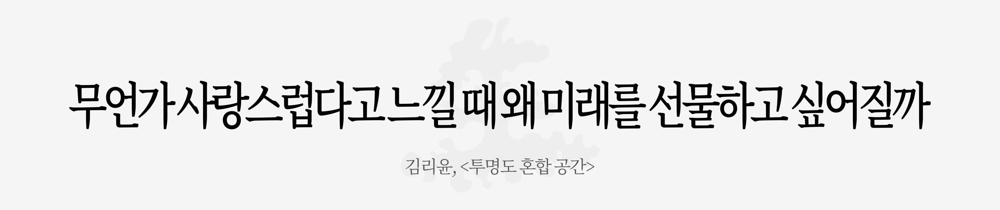
26년 5월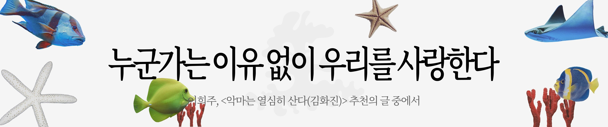
26년 7월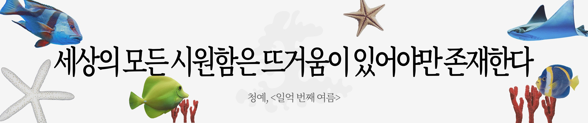
26년 7월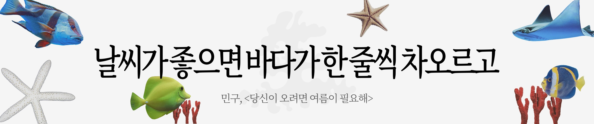
26년 7월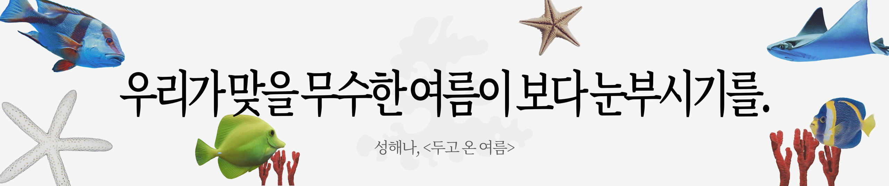
26년 7월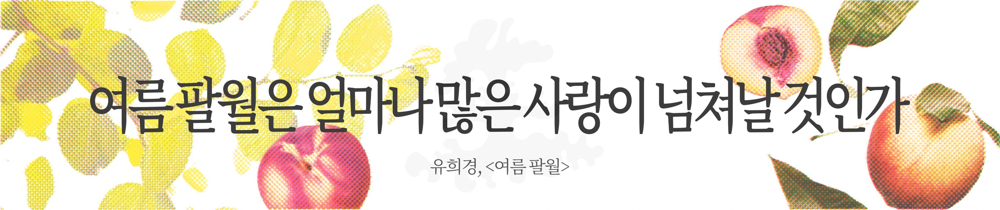
26년 8월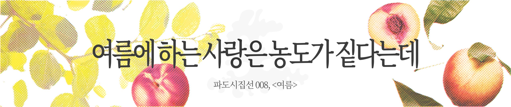
26년 8월- 26년 8월
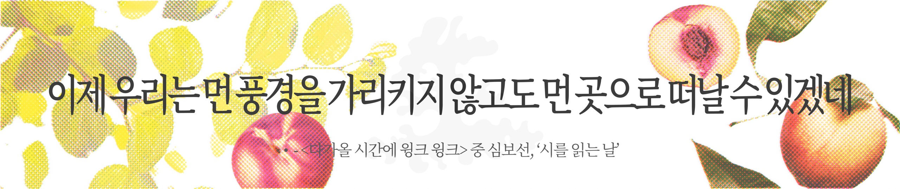
26년 8월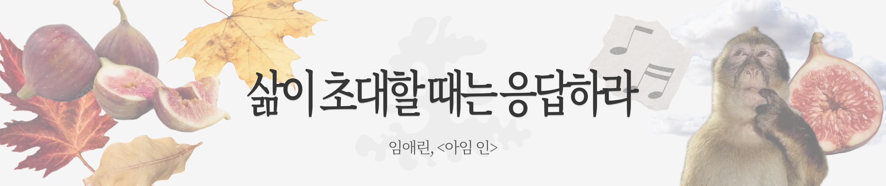
26년 9월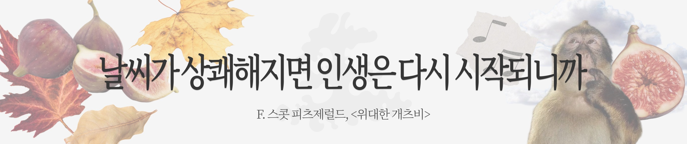
26년 9월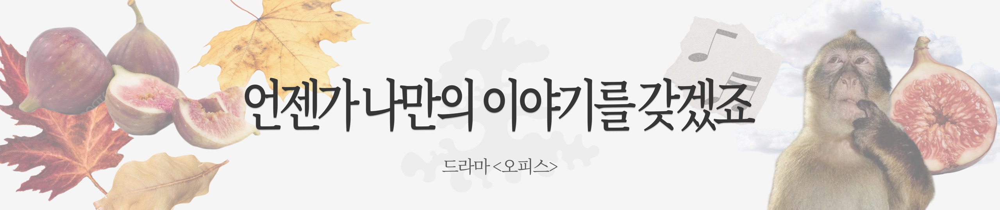
26년 9월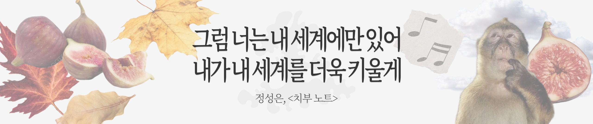
26년 9월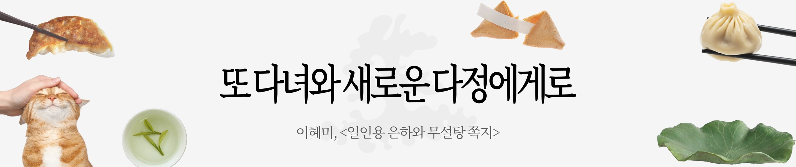
26년 10월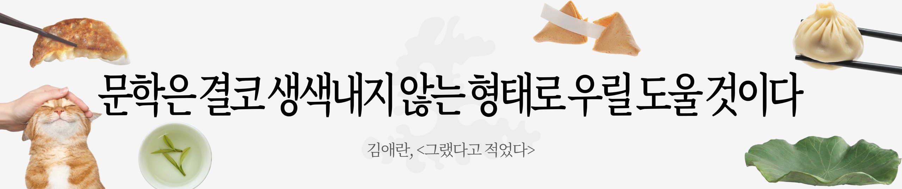
26년 10월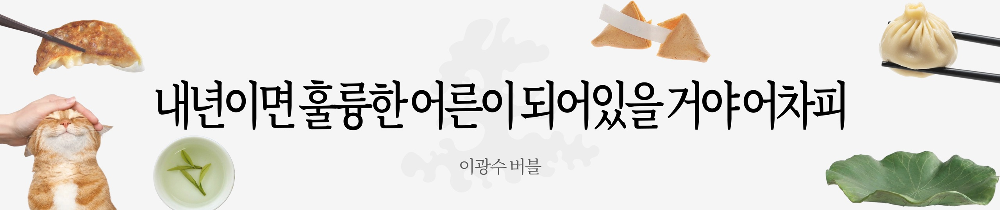
26년 10월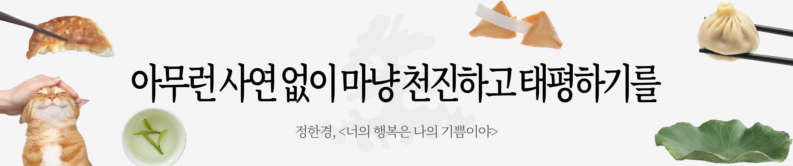
26년 10월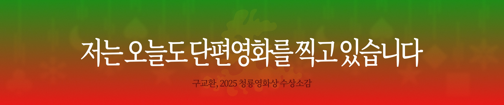
연말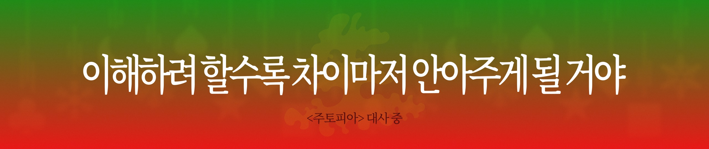
연말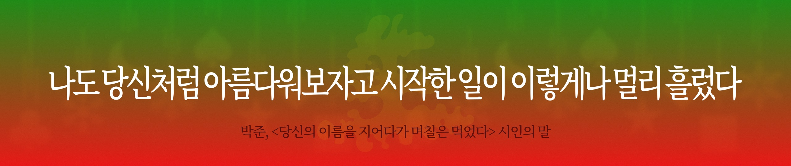
연말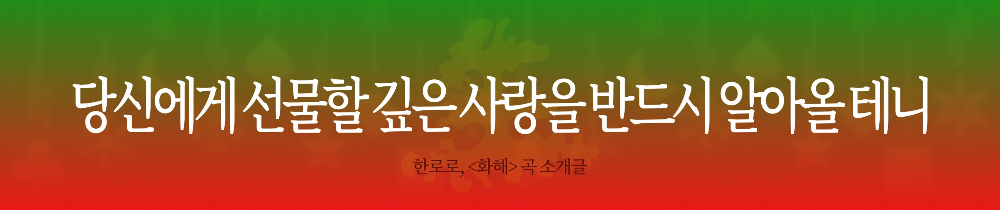
연말
이 문단에는 제작 과정에서 가장 오래 고민한 결정 하나를 구체적으로 적는다. (임시 원고)
Result끝까지 읽힌 문장
결과 단락에는 회차별 조회·저장·공유의 흐름과, 잘 된 회차와 그렇지 않은 회차의 차이를 숫자로 확인한 내용이 들어간다. 확인한 값만 적는다.
마지막으로 다음 회차에서 바꿀 것 한 가지를 적는다. (임시 원고)